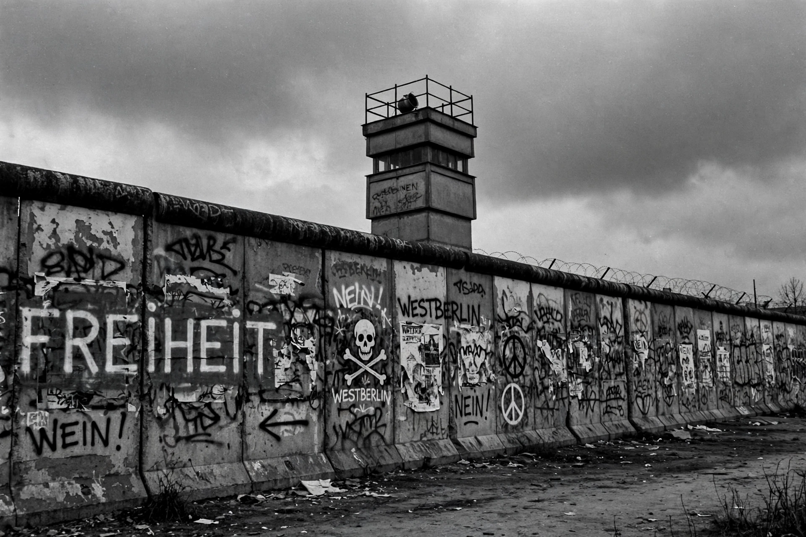

Cold War
| Date | 1947 – 1991 |
|---|---|
| Participants | United States and allies; Soviet Union and allies |
| Ended with | Dissolution of the Soviet Union (1991) |

[Image: the Berlin Wall covered in graffiti, with a watchtower behind it, in a black-and-white style photograph]The Cold War was a period of global geopolitical rivalry between the United States and the Soviet Union and their respective allies, the Western Bloc and the Eastern Bloc, lasting from the end of the Second World War (1947) to the dissolution of the Soviet Union in 1991. It is called 'cold' because the two superpowers never fought each other directly in a major war, though they supported opposing sides in proxy wars in Korea, Vietnam, Afghanistan and elsewhere.
The rivalry was ideological (liberal capitalism versus communism), military (enormous nuclear and conventional arsenals), and competitive in science, technology and prestige — most visibly in the Space Race.
Course
The Cold War began as the wartime alliance collapsed over the fate of Europe: the Truman Doctrine, the Marshall Plan, the Berlin Blockade (1948–49) and the founding of NATO (1949) faced a Soviet-dominated Eastern Europe and, from 1955, the Warsaw Pact. The Korean War (1950–53) was its first great proxy conflict.
Crises that brought the world close to nuclear war included the Cuban Missile Crisis of October 1962 and the 1983 war scare around NATO's Able Archer exercise. Periods of détente in the 1970s alternated with renewed confrontation after the Soviet invasion of Afghanistan in 1979.
End
Mikhail Gorbachev's reforms — glasnost and perestroika — and his refusal to use force to keep Eastern Europe transformed the situation: in 1989 the communist governments of Eastern Europe fell, the Berlin Wall was breached on 9 November 1989, Germany reunified in 1990, and the Soviet Union itself dissolved in December 1991, ending the Cold War.
Its legacies include the nuclear arsenals and alliance systems (NATO above all) that persist today, the division of Korea, and ongoing debates among historians about its causes, dangers and whether a 'new cold war' describes twenty-first-century great-power rivalry.